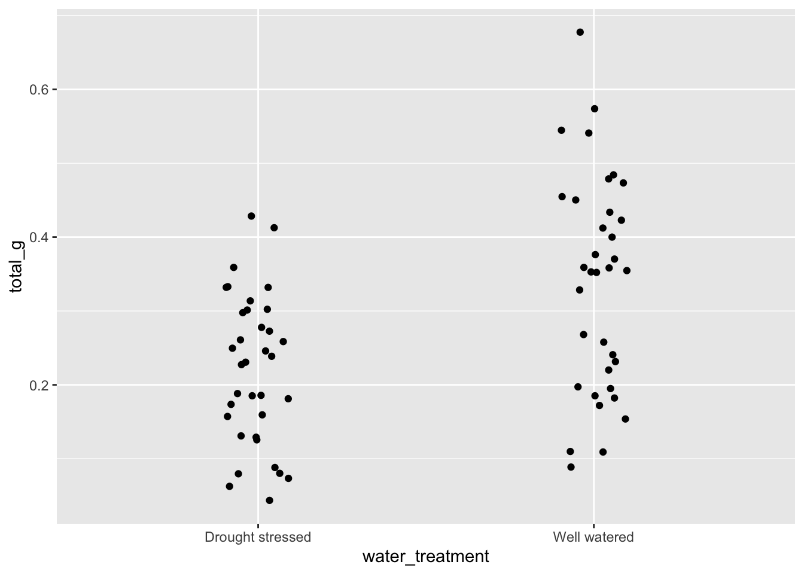
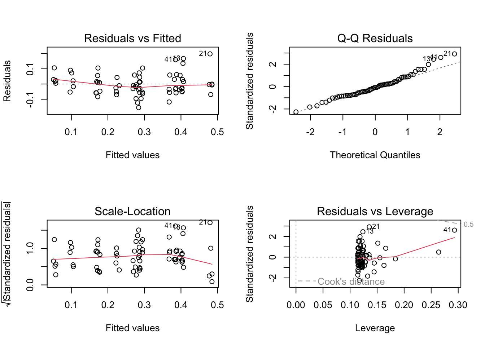
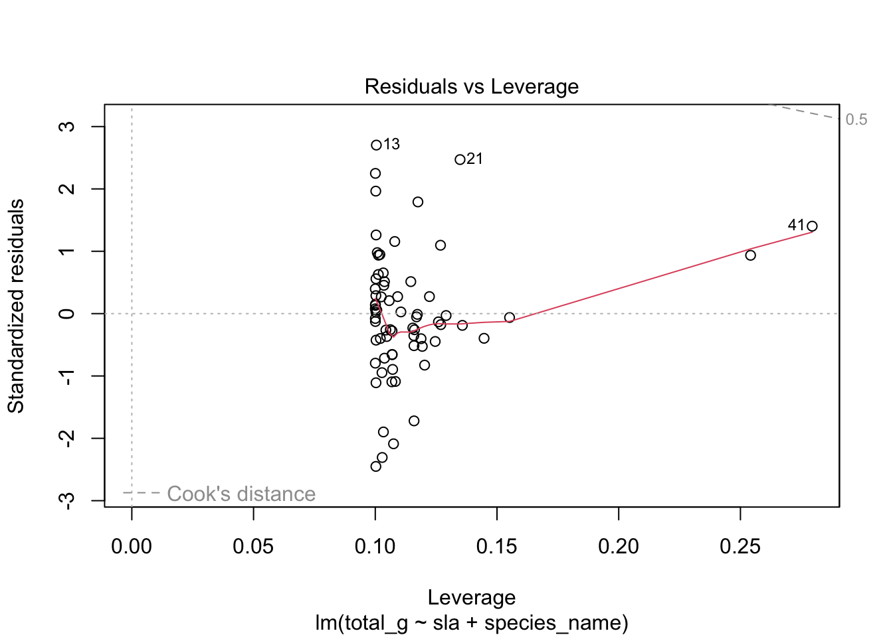
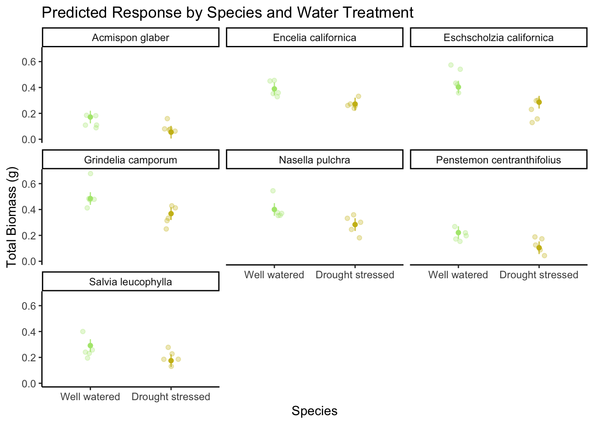
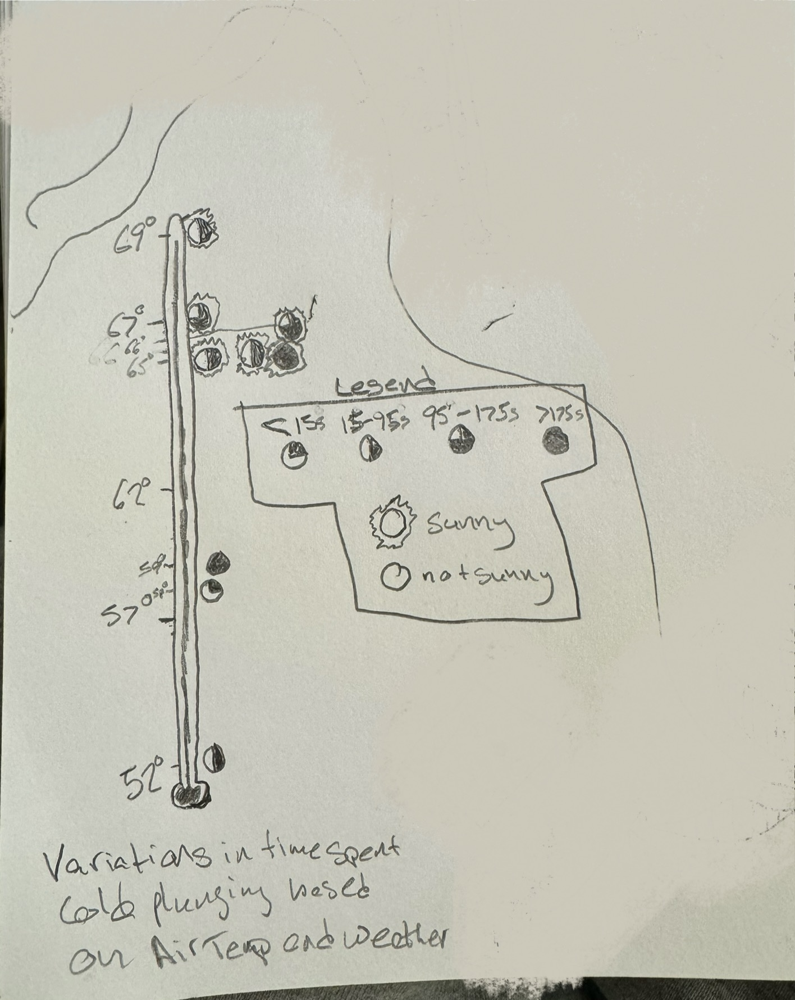

#load in packages
library(tidyverse)
library(readxl)
library(here)
library(janitor)
#visualize pairs
library(GGally)
#selecting models
library(MuMIn)
#model predictions
library(ggeffects)
#model tables
library(gtsummary)
library(flextable)
library(modelsummary)
library(tibble) # for adding rows manually
drought_exp <- read_xlsx(path = here("data",
"Valliere_etal_EcoApps_Data.xlsx"),
sheet = "First Harvest")Homework 3
str(drought_exp)tibble [70 × 13] (S3: tbl_df/tbl/data.frame)
$ Species : chr [1:70] "ENCCAL" "ENCCAL" "ENCCAL" "ENCCAL" ...
$ Water : chr [1:70] "WW" "WW" "WW" "WW" ...
$ Rep # : num [1:70] 1 2 3 4 5 1 2 3 4 5 ...
$ Height (cm) : num [1:70] 5.8 4.9 8.4 6.5 7.1 3.2 4.4 4.2 4.5 3.9 ...
$ Leaf # : num [1:70] 11 8 11 12 10 7 7 10 8 6 ...
$ Leaf dry weight (g): num [1:70] 0.0294 0.0185 0.0177 0.0178 0.0164 0.017 0.0193 0.0153 0.0159 0.0133 ...
$ Leaf area (cm2) : num [1:70] 5.01 3.98 3.69 3.84 3.63 3.06 3.1 2.94 2.73 2.61 ...
$ SLA : num [1:70] 170 215 209 216 222 ...
$ Total LA : num [1:70] 55.1 31.8 40.6 46.1 36.3 ...
$ Shoot (g) : num [1:70] 0.253 0.164 0.241 0.213 0.232 ...
$ Root (g) : num [1:70] 0.202 0.165 0.209 0.146 0.12 ...
$ Total (g) : num [1:70] 0.455 0.329 0.45 0.359 0.352 ...
$ R:S : num [1:70] 0.8 1 0.9 0.7 0.5 0.8 1.2 3.1 0.9 1.2 ...class(drought_exp)[1] "tbl_df" "tbl" "data.frame"Clean the data
# cleaning
drought_exp_clean <- drought_exp %>%
clean_names() %>% # nicer column names
mutate(species_name = case_when( # adding column with species scientific names
species == "ENCCAL" ~ "Encelia californica", # bush sunflower
species == "ESCCAL" ~ "Eschscholzia californica", # California poppy
species == "PENCEN" ~ "Penstemon centranthifolius", # Scarlet bugler
species == "GRICAM" ~ "Grindelia camporum", # great valley gumweed
species == "SALLEU" ~ "Salvia leucophylla", # Purple sage
species == "STIPUL" ~ "Nasella pulchra", # Purple needlegrass
species == "LOTSCO" ~ "Acmispon glaber" # deerweed
)) %>%
relocate(species_name, .after = species) %>% # moving species_name column after species
mutate(water_treatment = case_when( # adding column with full treatment names
water == "WW" ~ "Well watered",
water == "DS" ~ "Drought stressed"
)) %>%
relocate(water_treatment, .after = water) # moving water_treatment column after waterggpairs(drought_exp_clean, # data frame
columns = c("leaf_dry_weight_g", # columns to visualize
"sla",
"shoot_g",
"root_g",
"total_g"),
upper = list(method = "pearson")) + # calculating Pearson correlation coefficient
theme_bw() + # cleaner theme
theme(panel.grid = element_blank()) # getting rid of gridlines
Choose 3 pairs of variables to compare. Make notes of those comparisons below.
Root and Shoot mass are strongly positively correlated (pearson’s r: 0.553)
Root and total mass strongly positively correlated (pearson’s r: 0.858)
Root and total mass are strongly positively correlated (pearson’s r: 0.902)
How does total biomass differ between species?
ggplot(data = drought_exp_clean, # data frame
aes(x = reorder(species_name, # reordering x-axis
-total_g, # in reverse(descending) order of mean total biomass
fun = mean), # calculating mean to reorder
y = total_g)) + # y-axis
geom_jitter(width = 0.1, # narrow jitter
height = 0) # not jittering points up and downPlants with larger biomass seem to have larger ranges. Grindelia has highest biomass and Acmispon has the lowest.
How does total biomass differ between water treatments?
ggplot(data = drought_exp_clean, # data frame
aes(x = water_treatment, # x-axis
y = total_g)) + # y-axis
geom_jitter(width = 0.1, # narrow jitter
height = 0) # not jittering points up and down
Well watered plants have a much larger range of total biomass than drought stressed plants. Overall, the well watered plants have a larger biomass. This makes sense based on the biology of plants
how does specific leaf area (SLA) influence total biomass?
ggplot(data = drought_exp_clean, # data frame
aes(x = sla, # x-axis
y = total_g)) + # y-axis
geom_point() # scatterplot
Specific leaf area seems to have not much effect on the total biomass. However, statistically they have a moderate correlation (Check correlation!).
Model construction
What is the null model?
- None of the factors can predict the other.
What is the saturated model?
- SLA, Water treatment, and species.
In class we are going to try two more models:
- Total biomass as a function of SLA and water treatment.
- Total biomass as a function of SLA and species.
For homework, you will construct one more model:
- Total biomass as a function of water treatment and species.
You will then compare all 5 models to determine which best describes total biomass. For your homework, you will need to create a table summarizing the structure of these models.
0. Null model
model0 <- lm(total_g ~ 1, # formula
data = drought_exp_clean) # data frame1. total biomass as a function of SLA, water treatment, and species
# saturated model
model1 <- lm(total_g ~ sla + water_treatment + species_name,
data = drought_exp_clean)
par(mfrow = c(2, 2))
plot(model1)
# you might get a warning when you run this code - that is ok!diagnostic for saturated model looked good
2. total biomass as a function of SLA and water treatment
model2 <- lm(total_g ~ sla + water_treatment,
data = drought_exp_clean)
plot(model2)


Look at diagnostics later
3. total biomass as a function of SLA and species
model3 <- lm(total_g ~ sla + species_name,
data = drought_exp_clean)
plot(model3)

Look at diagnostics later
model4 <- lm(total_g ~ water_treatment + species_name,
data = drought_exp_clean)
plot(model4)


Model selection
From the MuMIn package
Multi Model Inference (MuMIn)
model.sel(model0,
model1,
model2,
model3,
model4)Model selection table
(Int) sla spc_nam wtr_trt df logLik AICc delta weight
model4 0.05455 + + 9 88.598 -156.2 0.00 0.772
model1 0.07994 -0.0002475 + + 10 88.741 -153.8 2.44 0.228
model3 -0.03315 0.0012900 + 9 72.538 -124.1 32.12 0.000
model2 0.04670 0.0012810 + 4 52.220 -95.8 60.37 0.000
model0 0.27900 2 39.580 -75.0 81.22 0.000
Models ranked by AICc(x) Out of the four models we have tried, the best model is the one that includes Only two of three predictors: Species and water treatment. (Lowest AIC)
Note that this may change once you fit and compare the other model!
look at the diagnostic again
Model summaries
summary(model0)
Call:
lm(formula = total_g ~ 1, data = drought_exp_clean)
Residuals:
Min 1Q Median 3Q Max
-0.23539 -0.09754 -0.01924 0.08001 0.39851
Coefficients:
Estimate Std. Error t value Pr(>|t|)
(Intercept) 0.27899 0.01655 16.86 <2e-16 ***
---
Signif. codes: 0 '***' 0.001 '**' 0.01 '*' 0.05 '.' 0.1 ' ' 1
Residual standard error: 0.1385 on 69 degrees of freedomsummary(model1)
Call:
lm(formula = total_g ~ sla + water_treatment + species_name,
data = drought_exp_clean)
Residuals:
Min 1Q Median 3Q Max
-0.155116 -0.049790 -0.005583 0.030385 0.197977
Coefficients:
Estimate Std. Error t value Pr(>|t|)
(Intercept) 0.0799419 0.0564475 1.416 0.161798
sla -0.0002475 0.0004948 -0.500 0.618766
water_treatmentWell watered 0.1222356 0.0203969 5.993 1.20e-07
species_nameEncelia californica 0.2375190 0.0512687 4.633 1.94e-05
species_nameEschscholzia californica 0.2335187 0.0328437 7.110 1.50e-09
species_nameGrindelia camporum 0.3300368 0.0466659 7.072 1.74e-09
species_nameNasella pulchra 0.2405511 0.0401955 5.985 1.24e-07
species_namePenstemon centranthifolius 0.0608120 0.0391065 1.555 0.125111
species_nameSalvia leucophylla 0.1166594 0.0333873 3.494 0.000892
(Intercept)
sla
water_treatmentWell watered ***
species_nameEncelia californica ***
species_nameEschscholzia californica ***
species_nameGrindelia camporum ***
species_nameNasella pulchra ***
species_namePenstemon centranthifolius
species_nameSalvia leucophylla ***
---
Signif. codes: 0 '***' 0.001 '**' 0.01 '*' 0.05 '.' 0.1 ' ' 1
Residual standard error: 0.07296 on 61 degrees of freedom
Multiple R-squared: 0.7545, Adjusted R-squared: 0.7223
F-statistic: 23.44 on 8 and 61 DF, p-value: 6.283e-16summary(model2)
Call:
lm(formula = total_g ~ sla + water_treatment, data = drought_exp_clean)
Residuals:
Min 1Q Median 3Q Max
-0.231899 -0.082814 -0.004803 0.081373 0.287369
Coefficients:
Estimate Std. Error t value Pr(>|t|)
(Intercept) 0.0466979 0.0544473 0.858 0.39413
sla 0.0012807 0.0003736 3.428 0.00104 **
water_treatmentWell watered 0.0895679 0.0291549 3.072 0.00307 **
---
Signif. codes: 0 '***' 0.001 '**' 0.01 '*' 0.05 '.' 0.1 ' ' 1
Residual standard error: 0.1173 on 67 degrees of freedom
Multiple R-squared: 0.3031, Adjusted R-squared: 0.2823
F-statistic: 14.57 on 2 and 67 DF, p-value: 5.566e-06summary(model3)
Call:
lm(formula = total_g ~ sla + species_name, data = drought_exp_clean)
Residuals:
Min 1Q Median 3Q Max
-0.212047 -0.037796 -0.004841 0.042842 0.233852
Coefficients:
Estimate Std. Error t value Pr(>|t|)
(Intercept) -0.0331529 0.0665128 -0.498 0.619935
sla 0.0012900 0.0005289 2.439 0.017606
species_nameEncelia californica 0.1146304 0.0587484 1.951 0.055554
species_nameEschscholzia californica 0.2218462 0.0409907 5.412 1.07e-06
species_nameGrindelia camporum 0.2263604 0.0541869 4.177 9.39e-05
species_nameNasella pulchra 0.1676027 0.0478947 3.499 0.000869
species_namePenstemon centranthifolius -0.0061772 0.0468531 -0.132 0.895535
species_nameSalvia leucophylla 0.1386575 0.0414896 3.342 0.001414
(Intercept)
sla *
species_nameEncelia californica .
species_nameEschscholzia californica ***
species_nameGrindelia camporum ***
species_nameNasella pulchra ***
species_namePenstemon centranthifolius
species_nameSalvia leucophylla **
---
Signif. codes: 0 '***' 0.001 '**' 0.01 '*' 0.05 '.' 0.1 ' ' 1
Residual standard error: 0.09122 on 62 degrees of freedom
Multiple R-squared: 0.61, Adjusted R-squared: 0.566
F-statistic: 13.85 on 7 and 62 DF, p-value: 1.185e-10summary(model4)
Call:
lm(formula = total_g ~ water_treatment + species_name, data = drought_exp_clean)
Residuals:
Min 1Q Median 3Q Max
-0.157087 -0.046953 -0.003733 0.041244 0.192657
Coefficients:
Estimate Std. Error t value Pr(>|t|)
(Intercept) 0.05455 0.02451 2.225 0.02973 *
water_treatmentWell watered 0.11695 0.01733 6.746 5.90e-09 ***
species_nameEncelia californica 0.21774 0.03243 6.714 6.70e-09 ***
species_nameEschscholzia californica 0.23164 0.03243 7.143 1.22e-09 ***
species_nameGrindelia camporum 0.31335 0.03243 9.662 5.53e-14 ***
species_nameNasella pulchra 0.22881 0.03243 7.055 1.72e-09 ***
species_namePenstemon centranthifolius 0.05003 0.03243 1.543 0.12799
species_nameSalvia leucophylla 0.12020 0.03243 3.706 0.00045 ***
---
Signif. codes: 0 '***' 0.001 '**' 0.01 '*' 0.05 '.' 0.1 ' ' 1
Residual standard error: 0.07252 on 62 degrees of freedom
Multiple R-squared: 0.7535, Adjusted R-squared: 0.7257
F-statistic: 27.08 on 7 and 62 DF, p-value: < 2.2e-16What are the reference levels?
summary(model1) - reference for species_name
reference for water_treatment: water_treatment: Drought stressed reference for species_name: Species_Name: Acispon Glaber
Interpret the model estimates for the:
- intercept: Mass of Acmispon Glaber in drought stressed treatment when SLA = 0
- SLA slope: Across drought treatments and species, with each 1 unit increase in SLA (mm2/dry mass leaf), we expect an increase in total mass of - 0.00025 WHICH MEANS WITH THE ESTIMATE AND STANDARD ERROR THERE IS NO EFFECT OF SLA ON TOTAL MASS
- well watered estimate: Across species and SLA well watered plants tend to be 0.12 ± 0.02 grams heavier than drought stressed plants
- Lotus scoparius estimate: insert response here
- Stipa pulchra estimate: insert response here
Model predictions
Note: only plot terms in the model you select - if your doesn’t include one of these terms, take it out and adjust the plotting code accordingly!
model_preds <- ggpredict(model1,
terms = c("sla",
"water_treatment",
"species_name"))
# use View(model_preds) to see the predictions as a data frame
# use model_preds to see the predictions formatted nicely
View(model_preds)Visualization
Note: this is the quick way to visualize model predictions. For your homework, you may find it easier to plot things yourself (i.e. not using the plot() functionality within ggeffects). See lecture for an example of how to do this.
# plot function within ggeffects
plot(model_preds, # model predictions
limit_range = TRUE, # limit the range of predictions to the range of predictor values
show_data = TRUE) + # show the underlying data
# everything below this is ggplot() stuff
theme_classic() + # classic theme
labs(title = "Preliminary model visualization") + # plot title
theme(panel.grid = element_blank()) # getting rid of gridlines
The “more customizable” way:
# creating new data frame of model predictions for plotting
model_preds_for_plotting <- model_preds %>%
rename(sla = x, # renaming columns to make this easier to use
water_treatment = group,
species_name = facet)
# use View(model_preds_for_plotting)
# to compare this to the original model_preds data frame
ggplot() +
# underlying data
geom_point(data = drought_exp_clean,
aes(x = sla,
y = total_g,
color = water_treatment)) +
# model prediction 95% CI ribbon
geom_ribbon(data = model_preds_for_plotting,
aes(x = sla,
y = predicted,
ymin = conf.low,
ymax = conf.high,
fill = water_treatment),
alpha = 0.2) +
# model prediction lines
geom_line(data = model_preds_for_plotting,
aes(x = sla,
y = predicted,
color = water_treatment)) +
# cleaner theme
theme_classic() +
# creating different panels for species
facet_wrap(~species_name) 
Problem 1
a.
Table 1: The columns are defined by the different models between variables. The Null model is
rows <- tribble(~term,~null,~"model 1", ~"model 2", ~"model 3", ~"model 4",
'AIC ∆', '81.22','2.44', '60.37','32.12', '0.00',) # create a manual tribble to add the aic delta to the table
attr(rows, 'position') <- c(20)#put the new row in the 20th row of the table
# comparing models
modelsummary <- modelsummary::modelsummary( # this function takes a list of models
list(
"Null" = model0, # "model name" = model object
"Model 1" = model1,
"Model 2" = model2,
"Model 3" = model3,
"Model 4" = model4
),
add_rows = rows, #add the manually made tibble to the table
gof_map = c("r.squared", "aic"), #only include the r squared and aic in the goodness of fit stats
title = "Table 1: Linear Regression of effect of SLA, Water Treatment, and Various Plant Species on Total Biomass", #add a title
statistic = c("p= {p.value}"), # make only p value statistics added to the table
output = "flextable", #make the output table a flextable so it can be edited as one
stars = TRUE #add stars to statistically significant values
)
modelsummary %>%
autofit() %>% #make the spacing of the columns reasonable
border_inner_v() %>% #make vertical lines in between the cells
border_inner_h() %>% #make horizontal lines in between the cells
bg(i = c(1,3,5,7,9,11,13,15,17,19:21), bg = "grey") %>% #make the background of certain rows grey
bold(part = "header") # make the headers of the columns bold
| Null | Model 1 | Model 2 | Model 3 | Model 4 |
|---|---|---|---|---|---|
(Intercept) | 0.279*** | 0.080 | 0.047 | -0.033 | 0.055* |
p= <0.001 | p= 0.162 | p= 0.394 | p= 0.620 | p= 0.030 | |
sla | 0.000 | 0.001** | 0.001* | ||
p= 0.619 | p= 0.001 | p= 0.018 | |||
water_treatmentWell watered | 0.122*** | 0.090** | 0.117*** | ||
p= <0.001 | p= 0.003 | p= <0.001 | |||
species_nameEncelia californica | 0.238*** | 0.115+ | 0.218*** | ||
p= <0.001 | p= 0.056 | p= <0.001 | |||
species_nameEschscholzia californica | 0.234*** | 0.222*** | 0.232*** | ||
p= <0.001 | p= <0.001 | p= <0.001 | |||
species_nameGrindelia camporum | 0.330*** | 0.226*** | 0.313*** | ||
p= <0.001 | p= <0.001 | p= <0.001 | |||
species_nameNasella pulchra | 0.241*** | 0.168*** | 0.229*** | ||
p= <0.001 | p= <0.001 | p= <0.001 | |||
species_namePenstemon centranthifolius | 0.061 | -0.006 | 0.050 | ||
p= 0.125 | p= 0.896 | p= 0.128 | |||
species_nameSalvia leucophylla | 0.117*** | 0.139** | 0.120*** | ||
p= <0.001 | p= 0.001 | p= <0.001 | |||
R2 | 0.000 | 0.755 | 0.303 | 0.610 | 0.754 |
AIC ∆ | 81.22 | 2.44 | 60.37 | 32.12 | 0.00 |
AIC | -75.2 | -157.5 | -96.4 | -127.1 | -159.2 |
+ p < 0.1, * p < 0.05, ** p < 0.01, *** p < 0.001 | |||||
Note 1: notice all the information at the bottom of the modelsummary output - if you only needed the AIC and delta AIC, what could you do? see package documentation for help
Note 2: you will always have to report the F-statistic, degrees of freedom, test statistic, p-value, ⍺, and R2. Whether or not this information is in a table is up to you.
b. Write a 5-6 sentence “statistical methods” section. (8 points)
Your answer should be in paragraph form and include:
how you addressed the central question(s) (i.e. to examine the influence of ____, ____, and ____ on _____, I…) how you chose the final model (i.e. to determine the model that best described ____, I…) how you visually determined that your final model conformed to the assumptions of a linear model (i.e. to evaluate linear model assumptions, I…)
Problem 2
a.
I have a number of different predictor variables that I was looking at to see if they influenced my plunge time. I think I want to look at how the air temp and weather type affected my plunge time. I am thinking of doing a thermometer with temps labelled on one side and then symbols representing different time spent plunging classifications and then something to add to those symbols to represent weather type. These symbols will stack horizontally to from left to right.
b. Inital Affective Data Viz

c. Draft Affective Data Viz

d.
In this piece I am showing how my time spent cold plunging varies over different air temps and weather types. Each circle represents one cold plunge and hwo filled in it is represents the amount of time spent in the water during that cold plunge. I drew a lot of inspiration from Stefanie Posavec and Giorgia Lupi’s Dear Data project. This is just an initial pencil skecth but I will put colors into this sketch to make the piece more attractive. I spent a lot of time brain storming which variables to use and how to use them.